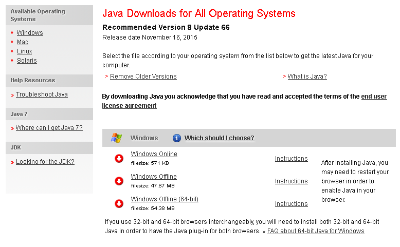
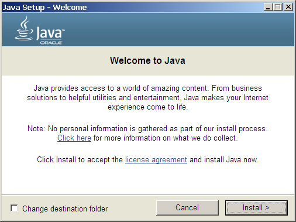
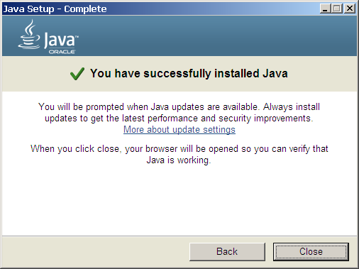

Configure and Use Apache Tomcat
XAMPP for Windows comes with Apache Tomcat built in, making it easy to get started with Java-based Web applications. This guide will walk you through the process of using Apache Tomcat with XAMPP.
XAMPP for Windows does not include Java, which is a pre-requisite for using Apache Tomcat. If you do not already have Java installed, you will see an error similar to the below when you attempt to start Apache Tomcat through the XAMPP control panel.
To correct this, install Java and then attempt to use Apache Tomcat, as below:
-
Browse to https://www.java.com/en/download/ and follow the instructions to download the latest version of the Java Runtime Environment.
 -
Follow the on-screen instructions to install Java.
Once installed, you will see a message like the one below:
On some versions of Windows, you will not be able to install Java without administrator privileges. You may either need to log in as a user with administrative rights or, if you are using the offline Java installer, you may need to right-click the installer file and select the "Run as administrator" menu option, then enter administrator credentials (if required) to proceed. -
Start the Apache Tomcat server using the XAMPP control panel.

You should now be able to access Apache Tomcat by browsing to http://localhost:8080/ in your browser’s address bar. Here’s an example of what you should see:
Apache Tomcat includes two applications, the "manager" application and the "host-manager" application, that simplify management and deployment of Web applications and provide detailed information on server status. These applications can be accessed from the Apache Tomcat welcome page, as highlighted in the image above.
Access to the above applications is blocked by default. To access them, you must configure one or more sets of administrator accounts and then assign the roles "manager-gui" and/or "admin-gui" to these accounts. Accounts with the "manager-gui" role would have access to the "manager" application, and those with the "admin-gui" role would have access to the "host-manager" application.
To configure these accounts, follow the steps below:
-
Edit the tomcat-users.xml file in the tomcat/conf subdirectory of your XAMPP installation directory (typically C:\xampp) and add the line below, before the closing </tomcat-users> element:
<user username="admin" password="admin" roles="manager-gui,admin-gui" />
This configures an account with username "admin" and password "admin", with access to both the Apache Tomcat Web applications. Remember to replace the username and password with values specific to your installation.
If you prefer to have a separate account for each application, replace the previous configuration with this example:
<user username="manager" password="manager" roles="manager-gui" /> <user username="admin" password="admin" roles="admin-gui" />
-
Save the changes.
-
Restart the Apache Tomcat server using the XAMPP control panel.
You should now be able to access the Apache Tomcat Web applications using the configured credentials. Here’s an example of the management Web application, which includes controls to deploy new WAR applications.